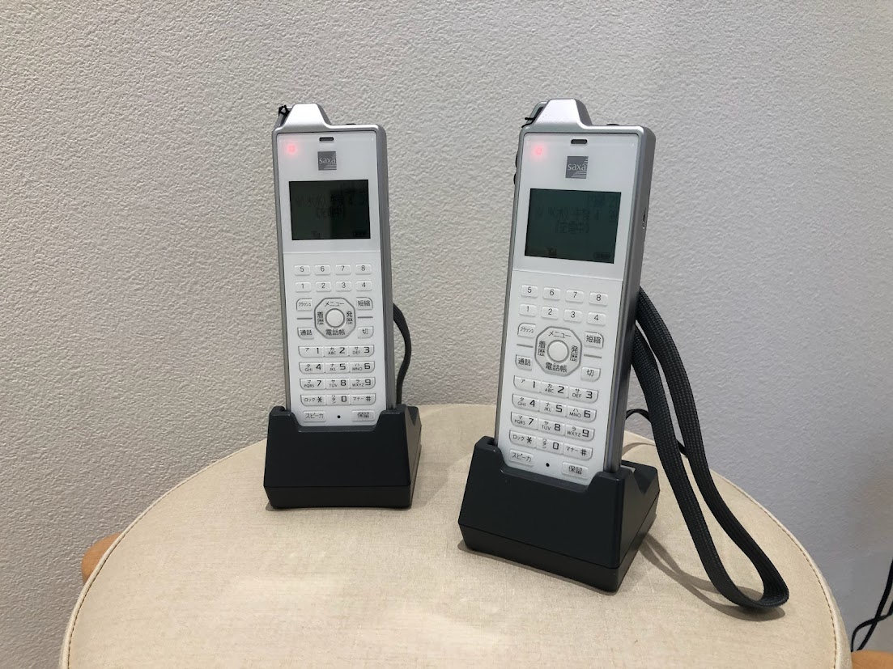
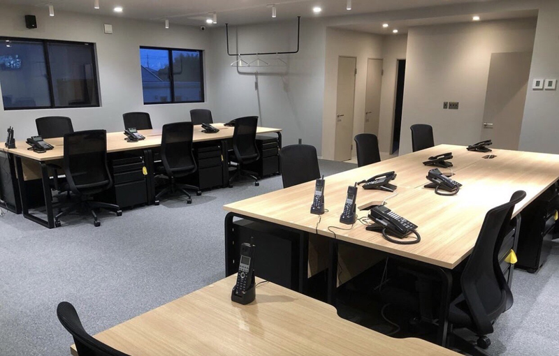
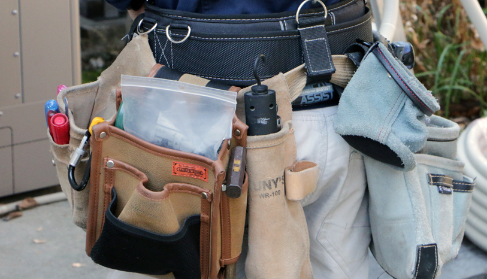
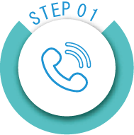
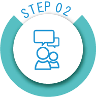
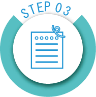
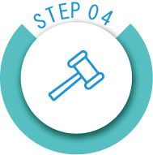
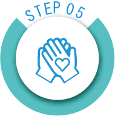

愛知県
の
中古ビジネスフォン
はお任せ!
ビジネスフォン導入費
を約
70％
以上削減！
お任せ
中古ビジネスホン取付実績
約2,500件
安心
全ての中古ビジネスホン
動作確認済
清潔
美品・中古ビジネスホン
除菌清掃済
資格
中古ビジネスホン販売許可
古物商許可
概要
ビジネスフォンとは、オフィスや事務所などで使用する業務用電話機のことで、主装置と複数台の電話機を接続して使用します。主装置が、外部からかかってくる「外線」とスタッフ同士で通話できる「内線」を制御することで、オフィス内にて複数の外線と内線を共用できるようになります。中古ビジネスホン取付実績について
１５年の通信工事で、愛知県内はもちろん、県外の数あるお客様からのご依頼をいただき、ビジネスホンの取付を、約2,500件程施工させていただきました。中古品クリーニング・動作確認について
この道20年のベテランスタッフが、１台ずつ丁寧にクリーニングをさせていただいております。また、電話機等の動作確認はAI・DD第二種国家資格者が動作試験をしておりますので、ご安心してご利用いただけます。古物商許可申請済
中古機器の販売をする際は、各都道府県の公安委員会に届け出が必要となります。当社は「愛知県公安委員会許可第543850201300号」取得済みとなります。移転

オフィスや事務所の移転の際、現状ご利用しているビジネスフォンを、移転先に再設置などのご依頼大歓迎！電話回線のお引越し等の移転手続きも全てお任せください。
増設
スタッフ増員などによる、ビジネスフォンの増設もお任せください！中古or新品どちらの場合も対応可能です！またデスクやオフィス家具のレイアウト変更による、配線工事のご相談もどうぞ！
新設
開業や独立で、新規の設置を中古ビジネスフォンでご依頼される方は全体の約９割となります！見た目も機能もじゅうぶんです！初期費用を抑えて施工させていいただきます！
保守
急なビジネスフォンのトラブルもお任せください！夜間工事や休日工事も承っております！お急ぎの場合はお電話にてご連絡ください！
【お問合せ】
無料
【下見・打合せ】
無料
【お見積り】
無料
【施工工事】
有料
【保守】
無料/有料

※お電話またはメールにて受付後、こちらから下見等のご連絡をさせていただきます。単純工事の場合は、下見が必要ない場合もございます。
お気軽にお問い合わせください
ビジネスフォンのご相談窓口・平日9時～17時中古美品
SAXA製 PLATIA2 Standard
23年度売上げNO1の中古ビジネスフォン
スマホ内線化
機能が充実した「プラティア２」 スマホを内線のように使用することができ、会社の電話番号で、外出先から発着信が可能となり、とても人気のシリーズとなります。 中古電話機の状態もよく、常に選ばれる電話機となります！ 詳しくお知りになりたい方はぜひお気軽にお問い合わせください。
中古美品
NTT製 αN1 typeS
安定の供給量・スタンダードな中古ビジネスフォン
現行の前モデル
人気のNTT製モデルの「αN1シリーズ」使いやすさ、機器障害の少なさが、多くの皆様から支持されております。中古電話機の量も安定しており、いつでもご提供することができ、ご安心いただけます。現行機種のひとつ前のシリーズとなりますので、中古商品の状態も良いものばかりとなります！
中古美品
SAXA製 PLATIA Standard
過去売り上げ台数ナンバーワン
お値段重視の方
こちらも人気のSAXA製モデル「PLATIA」機能やデザインが充実しながらも、コストパフォーマンスに優れた中古ビジネスホンとなります！現行機種の２モデル前の商品となりますが、まだまだ現役でお選びいただける商品となります。ぜひお気軽にお問合せください。
対応地域 = 名古屋、愛知県全域、静岡県、岐阜県、三重県
【愛知県】
【静岡県】
【岐阜県】
【三重県】